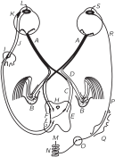
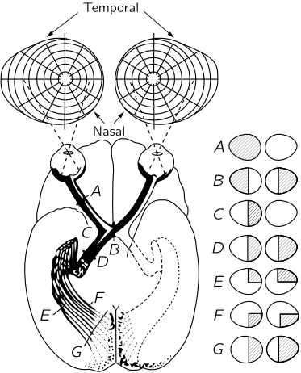
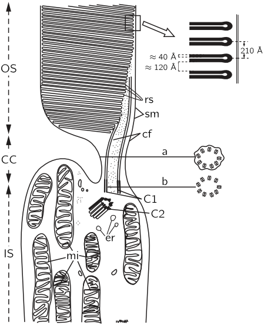
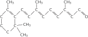
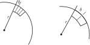
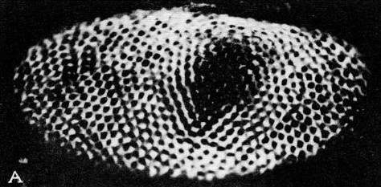

Глава 36. Механизм зрения
(К этой лекции конспекта не было.)
36–1 Ощущение цвета#
Обсуждая механизм зрения, прежде всего необходимо понять, что мы обычно видим не беспорядочный набор цветных или световых пятен (разумеется, если не находимся на выставке некоторых современных художников!). Когда мы смотрим на что-то, то видим человека или вещь; другими словами, мозг интерпретирует то, что мы видим, как человека или вещь. Как он это делает — никому неведомо, но делает он это, надо сказать, великолепно. Хотя мы на опыте учимся узнавать, как выглядит человек, однако есть некоторые более элементарные свойства зрения, которые тем не менее тоже включают сопоставление информации от различных частей того, что мы видим. Чтобы понять, как происходит интерпретация изображения в целом, следует изучить первые стадии сопоставления информации от различных клеток сетчатки. В настоящей главе мы сконцентрируем наше внимание главным образом именно на этих сторонах зрения, хотя попутно упомянем и о некоторых других смежных вопросах.
Примером того, что на очень элементарном уровне у нас происходит сложение информации, поступающей одновременно от нескольких частей глаза помимо нашей воли или способности обучаться, может служить та голубая тень, которая создавалась белым светом, когда на один и тот же экран одновременно светили и белый, и красный свет. Этот эффект по меньшей мере предполагает знание того, что фон экрана розовый, хотя, когда мы смотрим на голубую тень, в определенную точку глаза попадает только «белый» свет; где-то эти кусочки информации складываются вместе. Чем полнее и привычнее контекст, тем больше поправок на особенности делает глаз. Действительно, Ланд показал, что если мы будем смешивать этот кажущийся голубой и красный цвета в различных пропорциях, используя два диапозитива с поглощением перед красным и белым светом в различных отношениях, то можно довольно правдиво представить реальную сцену с реальными предметами. В этом случае мы также получаем множество промежуточных кажущихся цветов, аналогично тому, что мы получили бы, смешивая красный и зелено-голубой цвета; это кажется почти полным набором цветов, но если приглядеться к ним очень внимательно, то они не столь уж хороши. Но даже при этом просто удивительно, как много можно получить всего лишь из красного и белого. Чем больше сцена напоминает реальную ситуацию, тем больше мы способны компенсировать то обстоятельство, что весь свет на самом деле — всего лишь розовый!
Другим примером может служить появление «цвета» на черно-белом вращающемся диске, черные и белые области которого показаны на фиг. 36.1. При вращении диска изменения светлого и темного на любом радиусе в точности одинаковы; различается лишь фон для двух типов «полос». Тем не менее одно из «колец» кажется окрашенным в один цвет, а другое — в другой. 1 До сих пор никто не понимает причины появления этих цветов, однако ясно, что на самом элементарном уровне, по-видимому, в самом глазе, происходит сложение информации.
Почти все современные теории цветового зрения сходятся на том, что данные по смешиванию цветов указывают на существование в колбочках глаза только трех пигментов и что именно спектральное поглощение в этих трех пигментах создает ощущение цвета. Однако полная чувствительность, связанная с характеристиками поглощения трех пигментов, функционирующих совместно, не обязательно равна сумме отдельных чувствительностей. Все мы согласны, что желтый цвет просто не кажется красновато-зеленым; на самом деле многих, вероятно, несказанно удивит открытие того, что свет в действительности представляет собой смесь цветов, ибо, по-видимому, ощущение света вызывается каким-то другим процессом, а не простым смешиванием, наподобие аккорда в музыке, когда три ноты звучат одновременно, и если внимательно прислушаться, можно услышать их по отдельности. Мы не можем, как бы пристально ни приглядывались, увидеть красный и зеленый.
Уже первые теории зрения утверждали, что имеются три сорта пигментов и три сорта колбочек, каждая из которых содержит один пигмент; что от каждой колбочки в мозг идет нерв, так что в мозг переносятся три вида информации, а в мозге затем может происходить все что угодно. Это, конечно, неполная идея: мало толку в том, чтобы обнаружить, что информация переносится по зрительному нерву в мозг, ведь мы даже не начали решать эту проблему. Мы должны задать более фундаментальные вопросы: не все ли равно, где складывается информация? Действительно ли необходимо, чтобы она передавалась по зрительному нерву прямо в мозг, или сетчатка могла бы сначала провести какой-то анализ? Мы видели изображение сетчатки как чрезвычайно сложного устройства со множеством связей (фиг. 35.2), и она может выполнять некоторый анализ.
Дело в том, что ученые, занимающиеся анатомией и развитием глаза, показали, что сетчатка, в сущности, не что иное, как часть самого мозга: при развитии зародыша часть мозга выносится вперед, и назад вырастают длинные волокна, связывающие глаза с мозгом. По своей организации сетчатка весьма похожа на мозг, и, как кто-то прекрасно сказал, «мозг выдумал, как ему взглянуть на мир». Глаз — это кусочек мозга, которым он, так сказать, «касается света», внешнего мира. Таким образом, нет ничего необычного в том, что какой-то анализ цвета происходит уже в самой сетчатке.
Это предоставляет нам весьма интересную возможность. Никакой другой орган чувств не делает столько, если так можно выразиться, вычислений, прежде чем сигнал попадет в нерв, где можно произвести измерения. Вычисления для всех остальных органов чувств обычно происходят в самом мозге, где из-за огромного количества внутренних связей очень трудно добраться до конкретных мест, чтобы провести измерения. Здесь же, при зрительном восприятии, мы имеем свет, три слоя клеток, производящих вычисления, и результаты вычислений, передаваемые по зрительному нерву. Так что здесь мы получаем первую возможность физиологически наблюдать, как, быть может, работают первые слои мозга на своих первых шагах. Это, таким образом, представляет двойной интерес — не просто для зрения, но и для всей проблемы физиологии.
Тот факт, что существует три сорта пигментов, вовсе не означает, что должно быть также три сорта ощущений. Существует теория цветового зрения, основанная на совершенно противоположной цветовой схеме (фиг. 36.2). Согласно этой схеме, какое-то из нервных волокон несет много импульсов, если мы видим желтый цвет, и меньше, чем обычно, если мы видим голубой. Другое нервное волокно точно таким же образом переносит информацию о зеленом и красном цвете, а третье — о белом и черном. Другими словами, в этой теории уже начинают делаться догадки о системе связи и методе анализа.
Вопросы, которые мы пытаемся решить с помощью догадок об этом первоначальном анализе, следующие: проблема кажущихся цветов на розовом фоне; что происходит, когда глаз привыкает к различным цветам; и вопрос о так называемых психологических явлениях. Под этим термином мы понимаем, например, что белый цвет не «ощущается» нами как смесь красного, желтого и синего, и такая теория возникла потому, что, как утверждают психологи, существуют четыре кажущихся чистых цвета: «Существуют четыре мощных возбудителя, вызывающие соответственно простые голубой, желтый, зеленый и красный оттенки. В отличие от таких красок, как сиена, пурпур, фуксин или другие различимые цвета, эти простые оттенки являются несмешанными в том смысле, что ни один из них не принимает участия в образовании других, в частности голубой цвет нельзя назвать желтоватым, красноватым, зеленоватым и т. д.; психологически они представляют первичные оттенки». В этом состоит так называемый психологический факт. Чтобы выяснить, откуда взялся этот факт, нужно очень старательно просмотреть всю литературу. Все, что мы находим в современной литературе по этому вопросу, повторяет те же утверждения или утверждения одного из немецких психологов, авторитетом которого является Леонардо да Винчи, хорошо всем известный великий художник. Этот психолог говорит: «Леонардо считал, что существует пять цветов». Дальнейшие поиски приводят к еще более древним книгам. В этих книгах говорится примерно следующее: «Фиолетовый цвет — это красновато-голубой, оранжевый — это красновато-желтый, но можно ли красный рассматривать как фиолетовооранжевый? Не будут ли красный и желтый более основными цветами, чем фиолетовый и оранжевый? На вопрос, какие цвета они считают основными, большинство людей назовут красный, желтый и синий, а некоторые добавят к этим трем еще и четвертый — зеленый. Психологи привыкли принимать эти четыре цвета за основные». Итак, с точки зрения психологов, раз все говорят, что есть три цвета, а кое-кто утверждает, что четыре, и хотят, чтобы было четыре, ну пусть будет четыре. Это иллюстрирует трудности, сопровождающие психологические исследования. Ясно, что мы таким чувством обладаем, но узнать о нем немного больше очень трудно.
Можно идти по другому пути — физиологическому — и экспериментально выяснить, что на самом деле происходит в мозге, в глазе, в сетчатке или другом каком-то месте, и, может быть, удастся обнаружить, что некоторые комбинации импульсов от различных клеток передаются по определенным нервным волокнам. К сожалению, первичные пигменты не сосредоточены каждый в отдельной клетке: могут быть клетки, в которых содержится смесь различных пигментов, клетки с красным и зеленым пигментами или со всеми тремя сразу (информация об этих трех пигментах будет «белой» информацией) и т. д. Есть много способов связать всю эту систему, и мы должны выяснить, какой из них предпочла природа. В то же время хочется надеяться, что, поняв физиологические связи, мы хоть немного продвинемся вперед в понимании некоторых психологических аспектов. Итак, вперед по этому пути!
36–2 Физиология зрения#
Мы начинаем говорить не только о цветовом зрении, но и о зрении вообще только для того, чтобы напомнить о внутренних связях в сетчатке, показанных на фиг. 35.2. Сетчатка поистине напоминает поверхность мозга. Хотя настоящая картина под микроскопом выглядит несколько более сложно, чем этот схематический рисунок, тем не менее при тщательном анализе можно увидеть все эти внутренние связи. Несомненно, что одна часть поверхности сетчатки связана с другими частями и что информация, передаваемая по длинным аксонам, образующим зрительный нерв, представляет собой комбинированную информацию от многих клеток. Существуют три слоя клеток в последовательности их функций: клетки сетчатки, на которые действует свет, промежуточные клетки, которые принимают информацию от одной или нескольких клеток сетчатки и снова передают ее нескольким клеткам третьего слоя клеток, несущего ее в мозг. Между клетками этих слоев существуют самые разнообразные перекрещивающиеся связи.
Вернемся к некоторым аспектам строения и функции глаза (см. фиг. 35.1). Свет фокусируется главным образом роговицей, благодаря тому что поверхность ее искривлена и она «загибает» лучи света. Вот почему под водой мы видим не так хорошо, ибо показатели преломления роговицы ( 1.37) и воды ( 1.33) разнятся недостаточно сильно. Позади роговицы находится практически водная среда с показателем преломления 1.33, а дальше — хрусталик, строение которого очень интересно: он состоит из целого ряда слоев, как луковица, с той только разницей, что эти слои прозрачные и показатель преломления их меняется от 1.40 в середине до 1.38 по краям. (Неплохо было бы изготовить линзу с необходимым показателем преломления в любом месте; тогда нам незачем было бы так искривлять ее, как это делается с линзой с постоянным показателем преломления.) Более того, форма роговицы вовсе не сферическая. Сферическая линза обладает известной сферической аберрацией. Наружная часть роговицы более «плоская», чем у сферы, причем как раз настолько, чтобы сферическая аберрация ее оказалась меньше аберрации той сферической линзы, которую мы поставили бы вместо нее! Посредством этой оптической системы роговица — хрусталик свет фокусируется на сетчатку. Если мы смотрим на близко расположенные или удаленные предметы, то хрусталик искривляется или выпрямляется, изменяя тем самым фокусное расстояние и настраиваясь на различную удаленность. Для регулирования общего количества света в глазе имеется радужная оболочка, или радужка, которая определяет «цвет» глаз — у кого карие, у кого голубые. При увеличении количества света оболочка сжимается и зрачок уменьшается, при уменьшении — оболочка расходится и зрачок увеличивается.

Рассмотрим теперь изображенный схематически на фиг. 36.3 нервный механизм, регулирующий аккомодацию хрусталика, движение глаза, мышцы, поворачивающие глазное яблоко в глазнице, и радужную оболочку. Из всей информации, выходящей из зрительного нерва A, подавляющая часть разделяется на один из двух пучков (о них мы еще будем говорить) и по ним идет в мозг. Однако имеется несколько волокон (именно они сейчас нам и интересны), которые не идут непосредственно в зрительную кору головного мозга, где мы «видим» изображения, а вместо этого направляются в средний мозг H. Это как раз те волокна, которые измеряют среднюю освещенность и регулируют радужку; или, если изображение кажется расплывчатым, они пытаются скорректировать хрусталик; или, если изображение раздвоено, они пытаются подстроить глаза для бинокулярного зрения. Во всяком случае, они проходят через средний мозг и возвращаются назад в глаз. Буквой K обозначены мышцы, управляющие аккомодацией хрусталика, а буквой L — другая мышца, управляющая радужкой. Радужка имеет две мышечные системы. Одна из них — циркулярная мышца L, которая при возбуждении сжимается и сужает радужку; она работает очень быстро, и нервы идут непосредственно от мозга через короткие аксоны в радужку. Противоположными ей являются радиальные мышцы: когда становится темно и циркулярная мышца расслабляется, эти радиальные мышцы тянут наружу. Как и во многих других частях тела, здесь мы имеем пару мышц, работающих в противоположных направлениях; почти в каждом таком случае управляющие ими нервные системы настроены очень точно, так что, когда одной из них посылается сигнал сжаться, другой автоматически посылается сигнал расслабиться. Радужка представляет собой любопытное исключение: нервы, заставляющие радужку сжиматься, — это те самые, которые мы уже описали, но нервы, заставляющие ее расширяться, выходят неизвестно откуда, идут вниз в спинной мозг позади грудной клетки, в его грудные отделы, выходят из спинного мозга, поднимаются через шейные узлы и идут по кругу обратно в голову, чтобы управлять другим концом радужки. Фактически сигнал проходит через совершенно другую нервную систему — вовсе не центральную, а симпатическую, так что это весьма странный способ управления.
В глазе, как мы уже подчеркивали, имеется еще одна странность: светочувствительные клетки расположены не с той стороны, так что, прежде чем попасть в рецепторы, свет должен пройти через несколько слоев других клеток — он устроен наизнанку! Так что некоторые особенности великолепны, а некоторые, по-видимому, просто глупы.

На фиг. 36.4 показана связь глаза с частью мозга, наиболее непосредственно принимающей участие в процессе зрения. Зрительные нервные волокна идут в некоторую область, лежащую сразу же за D, называемым латеральным коленчатым телом, а затем в участок мозга, называемый зрительной корой. Следует помнить, что от каждого глаза некоторые волокна направляются в другую половину мозга, так что представленная картина не полна. Зрительные нервы от левой части правого глаза проходят через зрительный перекрест B, тогда как нервы от левой части левого глаза обходят его сбоку. Таким образом, левая часть мозга получает всю информацию, идущую от левых сторон обоих глаз, т. е. правой стороны поля зрения, тогда как правая сторона мозга «видит» левую часть поля зрения. Вот каким способом происходит сложение информации от обоих глаз и определяется удаленность предмета. Такова система бинокулярного зрения.
Очень интересны связи между сетчаткой и зрительной корой. Если в сетчатке каким-то образом вырезать или разрушить какое-то пятно, то погибает все волокно, и мы можем благодаря этому узнать, с чем оно связано. Оказывается, что в сущности эти связи взаимно однозначны: каждому пятну на сетчатке соответствует одно пятно в зрительной коре, и пятна, которые расположены очень близко друг к другу на сетчатке, оказываются очень близко друг к другу и в зрительной коре. Так что зрительная кора все же отражает пространственное расположение палочек и колбочек, хотя, конечно, и очень искаженно. Предметы, находящиеся в центре поля зрения и занимающие очень малую часть сетчатки, в зрительной коре распространяются на очень много клеток. Ясно, что полезно, чтобы предметы, первоначально близкие друг к другу, по-прежнему оставались близко друг к другу. Однако самое примечательное здесь вот что. Казалось бы, место, где наиболее важно иметь близко расположенные предметы, находится как раз в середине поля зрения. Поистине невероятно, но вертикальная линия в нашем поле зрения, когда мы на что-то смотрим, устроена таким образом, что информация от всех точек, расположенных справа от этой линии, поступает в левую половину мозга, а информация от точек, расположенных слева, — в правую половину мозга; при этом сама эта область устроена так, что прямо посередине проходит разрез, так что предметы, которые расположены очень близко друг к другу в самом центре, в мозге оказываются очень далеко друг от друга! Каким-то образом информация должна переходить из одной половины мозга в другую через какие-то другие каналы, что весьма удивительно.
Вопрос о том, как вообще эта сеть связывается вместе, чрезвычайно интересен. Вопрос о том, что уже связано и что еще нужно научиться связывать, довольно стар. Прежде думали, что, по-видимому, никаких врожденных связей вообще нет; имеются только какие-то грубые наметки, и лишь потом на опыте еще в детстве постигают, что когда предмет находится «вон там», то это дает такое-то ощущение. (Врачи постоянно уверенно заявляют о том, что чувствуют маленькие дети, но откуда сами они знают, что чувствует годовалый ребенок?) Может быть, годовалый ребенок, видя предметы «вон там», испытывает какое-то чувство и учится протягивать руку именно «туда», потому что когда он протягивает ее «сюда», то схватить предмет не удается. Но, по-видимому, этот подход все же неверен, ибо, как мы уже видели, во многих случаях такие специфические промежуточные связи существуют уже с рождения. Более показательны в этом отношении замечательные опыты над саламандрами. (К счастью, у саламандры имеется прямая перекрестная связь без зрительного перекреста, поскольку у нее глаза расположены по бокам головы и поля зрения обоих глаз не перекрываются. Саламандрам поэтому бинокулярное зрение ни к чему.) Опыты эти состоят в следующем. Мы можем перерезать зрительный нерв у саламандры, но он, однако, снова начнет расти из глаз. Так будут восстанавливаться сами собой тысячи и тысячи клеток. И хотя волокна зрительных нервов не будут лежать рядом (они теперь напоминают большой небрежно изготовленный телефонный кабель, все волокна которого перекручены и перепутаны), однако, достигнув мозга, они снова расположатся в надлежащем порядке. Когда перерезают зрительный нерв саламандры, то возникает вопрос: восстанавливается ли он снова? Да, восстанавливается. Таков замечательный ответ. Если саламандре перерезать зрительный нерв и он снова прорастет, к ней возвращается хорошая острота зрения. Однако если перерезать зрительный нерв, повернуть глаз «вверх ногами» и дать ему снова вырасти, то с остротой зрения все будет в порядке, но возникнет ужасная ошибка: когда саламандра видит муху «здесь, наверху», она прыгает за ней «туда, вниз», и она так никогда и не переучивается. Следовательно, существует какой-то таинственный способ, с помощью которого тысячи и тысячи волокон находят свои надлежащие места в мозге.
Проблема того, в какой степени всё связано и в какой нет, — важнейшая проблема в теории развития живых существ. Ответ еще неизвестен, но его интенсивно ищут.
Аналогичный опыт с золотой рыбкой приводит к тому же результату: в том месте, где мы перережем нерв, образуется страшный узел, подобно большому шраму или опухоли, и, несмотря на все это, волокна снова «прорастут» в мозг к своему истинному месту.
Для того чтобы это произошло, волокна, поскольку они растут по старому каналу зрительного нерва, «должны решать», в каком направлении расти. Но как им удается это делать? Возможно, что здесь работает какой-то химический механизм, который по-разному действует на разные волокна. Подумать только, сколь огромно число растущих волокон и каждое из них как-то по-своему отличается от соседних; реагируя на какой-то химический механизм, оно делает это достаточно однозначно, чтобы отыскать свое истинное место среди окончательных связей в мозге! Это поразительно, фантастично! Это одно из величайших явлений, открытых биологами за последнее время, и оно, несомненно, связано со многими старыми нерешенными проблемами роста, организации и развития организма, особенно зародыша.
Другое интересное явление связано с движением глаза. Чтобы добиться совпадения двух изображений в различных условиях, глаза должны двигаться. Эти движения могут быть разного рода: когда мы следим за чем-то, оба глаза должны поворачиваться одновременно в одном направлении — вправо или влево; когда же мы направляем их в одну и ту же точку на разных расстояниях, глаза должны двигаться в противоположных направлениях. Нервы, подходящие к мышцам глаза, как раз приспособлены для этих целей. Одни нервы заставляют внутренние мышцы одного глаза и наружные другого сокращаться, а противоположные мышцы — расслабляться, так что оба глаза движутся в одну сторону. Но есть и другой центр, возбуждение которого заставляет глаза двигаться навстречу друг другу из параллельного положения. Любой глаз может быть скошен в уголок, если второй при этом движется к носу, но совершенно невозможно сознательно или несознательно одновременно повернуть оба глаза в разные стороны, и вовсе не потому, что нет мышц, способных сделать это, а потому, что нет способа послать такие сигналы, чтобы оба глаза отвернулись в разные стороны, если только с нами не произошел несчастный случай или не случилось какого-нибудь повреждения, например если перерезан нерв. Хотя мышцы одного глаза, конечно, могут управлять его движением, даже йог не способен свободно разводить оба глаза в стороны волевым усилием, потому что для этого, по-видимому, нет никакого способа. В какой-то степени наши связи уже предопределены. Это важный момент, потому что в большинстве прежних книг по анатомии, психологии и так далее не учитывается или не подчеркивается тот факт, что наши связи уже настолько полностью сформированы, — в них утверждается, что всему этому просто учатся.
36–3 Палочки#

Посмотрим теперь подробнее, что происходит в палочках сетчатки. На фиг. 36.5 показана электронная микрофотография середины палочки (конец ее выходит вверх за пределы снимка). Справа в увеличенном виде слой за слоем видны плоские структуры, содержащие родопсин (зрительный пурпур) — красящее вещество, или пигмент, который, собственно, и обусловливает функцию палочек. Родопсин, являющийся пигментом, представляет собой большой белок, содержащий специальную группу, называемую ретиненом, которая может быть отщеплена от белка, что, несомненно, и является главной причиной поглощения света. Нам пока не понятно, почему эти структуры плоские, но весьма возможно, что это сделано для того, чтобы молекулы родопсина лежали параллельно друг другу. Химия этого явления изучена сейчас довольно хорошо, но, кроме того, возможно, что здесь имеет место и физика. Может оказаться, что все молекулы располагаются в своего рода ряд, так что когда одна из них возбуждается, вылетевший при этом, скажем, электрон пробегает до некоторого места в самом конце, чтобы выдать сигнал наружу, или что-то в этом роде. Этот вопрос очень важен, и он еще совсем не разработан. Это область, в которой в конечном счете будут использоваться как биохимия, так и физика твердого тела или что-то в этом роде.

Те же самые слоистые структуры найдены и в других местах, где тоже важен свет, например в хлоропласте растений, где под действием света происходит фотосинтез. При большом увеличении мы обнаруживаем те же самые слои, но, конечно, вместо ретинена мы находим хлорофилл. Химическая форма ретинена показана на фиг. 36.6. Его боковая ветвь содержит серию альтернирующих двойных связей, характерную почти для всех сильно поглощающих органических веществ, подобных хлорофиллу, гемоглобину и т. д. Эти вещества человек не может изготовить в своих собственных клетках и должен получать их с пищей в виде специального вещества, в точности похожего на ретинен, за исключением водородной связи на правом конце. Называется это вещество витамином А. Если в пище его недостаточно, то запас ретинена в организме не пополняется и развивается то, что мы называем куриной слепотой, т. е. количества пигмента будет недостаточно для того, чтобы можно было видеть в сумерках.
Известно также, почему такая серия двойных связей очень сильно поглощает свет. Я немного расскажу вам об этом. Альтернирующая серия двойных связей называется сопряженной двойной связью. Двойная связь означает, что там есть дополнительный электрон, который легко сдвинуть вправо или влево. Когда свет ударяет по этой молекуле, то электрон каждой двойной связи на один шаг сдвигается. В результате сдвинутся электроны во всей цепи, подобно тому, как упадут при толчке поставленные друг за другом костяшки домино, и хотя каждый из них проходит очень небольшое расстояние (мы считаем, что в отдельном атоме электрон может проходить только очень маленькое расстояние), в целом получается такой же эффект, как будто электрон с одного конца перескочил на другой! Это то же самое, как если бы один электрон прошел все расстояние взад и вперед, а в таком случае происходит значительно более сильное поглощение под действием электрического поля, чем если бы мы передвинули электрон только на расстояние, связанное с одним атомом. А поскольку двигать электрон взад и вперед не так уж трудно, то ретинен очень сильно поглощает свет; таков механизм, в основе которого лежит физика и химия.
36–4 Сложные глаза насекомых#
Вернемся теперь к биологии. Человеческий глаз — отнюдь не единственный тип глаза. У позвоночных почти все глаза по существу похожи на человеческие. Однако у низших животных мы встречаем множество других типов глаз: глазные пятна, различные глазные бокалы и другие менее чувствительные органы, обсуждать которые у нас нет времени. Но среди беспозвоночных есть и другой высокоразвитый глаз — сложный глаз насекомого. (У большинства насекомых, имеющих большие сложные глаза, есть также и различные дополнительные, более простые глаза.) Пчела — это насекомое, зрение которого изучено очень тщательно. Изучать свойства зрения пчел легко, потому что их привлекает мед, и мы можем ставить опыты, в которых помечаем мед, помещая его на синюю или красную бумагу, и смотрим, к какой они прилетают. Этим методом были обнаружены очень интересные особенности зрения пчелы.
Прежде всего, пытаясь определить, насколько отчетливо пчела видит разницу между двумя кусочками «белой» бумаги, некоторые исследователи нашли, что она видит ее не очень хорошо, а другие, наоборот, что она делает это чертовски здорово. Даже если брались два почти в точности одинаковых кусочка бумаги, пчела все же различала их. Один кусок бумаги, например, отбеливался цинковыми белилами, а другой — свинцовыми, и, хотя оба они выглядели в точности одинаково, пчела различала их, ибо они по-разному отражают ультрафиолетовый свет. Таким образом, было обнаружено, что глаз пчелы чувствителен к более широкому диапазону спектра, чем глаз человека. Наши глаза видят в диапазоне от 7000 до 4000 ангстрем, от красного до фиолетового, а пчелы могут видеть вплоть до 3000 ангстрем в ультрафиолетовой области! А это порождает целый ряд очень интересных эффектов. Прежде всего пчелы различают многие цветы, которые нам кажутся абсолютно одинаковыми. В этом нет ничего удивительного; ведь цветы цветут вовсе не для того, чтобы радовать наш взор. Они служат приманкой для пчел, своеобразным сигналом о том, что здесь есть мед. Всем известно, что есть очень много «белых» цветов. По-видимому, белый цвет не очень интересен для пчел, поскольку выяснилось, что все белые цветы имеют различную степень отражения в ультрафиолетовой области; они не отражают сто процентов ультрафиолетовых лучей, как это делал бы истинно белый цвет. От белого предмета отражается не весь падающий на него свет, ультрафиолетовые лучи теряются, а это в точности то же, что для нас потеря голубого цвета, т. е. получение желтого цвета. Итак, все цветы кажутся пчелам цветными. Однако мы также знаем, что пчелы не видят красного цвета. Поэтому можно было бы ожидать, что все красные цветы должны казаться пчеле черными. Но это не так! Тщательное изучение красных цветов показывает, во-первых, что даже нашим собственным глазом мы можем видеть, что подавляющее большинство красных цветов имеет синеватый оттенок, поскольку они главным образом отражают дополнительное количество синего света, то есть той части спектра, которую видит пчела. Кроме того, опыты показывают также, что у цветов отражение ультрафиолетового света различно на разных частях лепестков и т. д. Так что, если бы мы могли видеть цветы так, как их видят пчелы, они казались бы еще более красивыми и разнообразными!
Впрочем, было обнаружено, что есть несколько видов красных цветов, которые не отражают ни синего, ни ультрафиолетового света и, следовательно, должны казаться пчеле черными! Это обстоятельство немало беспокоило людей, занимающихся подобными вопросами, ибо черный цвет едва ли привлекателен — его ведь трудно отличить от обычной темной тени. И в самом деле, выяснилось, что пчелы не посещают эти цветы. Зато их посещают колибри, а колибри прекрасно видят красный цвет!
Еще одна интересная сторона зрения пчелы состоит в том, что, взглянув на кусочек голубого неба и не видя самого солнца, пчела, по-видимому, может все-таки определить, где находится солнце. Для нас это не так-то просто. Если мы посмотрим из окна на небо и увидим, что оно голубое, то в каком направлении находится солнце? Пчела может это определить, потому что она весьма чувствительна к поляризации света, а рассеянный свет неба поляризован. 2 До сих пор еще ведутся споры о том, как именно работает эта чувствительность. Обусловлено ли это тем, что отражения света различны в различных условиях, или же глаз пчелы чувствителен непосредственно, пока неизвестно. 3
Говорят также, что пчела замечает мелькания с частотой до 200 колебаний в секунду, тогда как мы видим их только до 20. Движения пчел в ульях очень быстры, лапки движутся, крылья вибрируют, но нашему глазу очень трудно заметить эти движения. Однако если бы мы могли видеть быстрее, мы смогли бы рассмотреть это движение. По-видимому, для пчелы очень важно, чтобы ее глаз обладал столь быстрой реакцией.
Теперь поговорим о том, какова, собственно, острота зрения у пчелы? Глаз пчелы сложный; состоит он из огромного числа особых глазков, называемых омматидиями, которые расположены на почти сферической поверхности по бокам головы насекомого. На фиг. 36.7 показан омматидий. В его вершине находится прозрачная область, своего рода «хрусталик», но в действительности это больше напоминает фильтр, заставляющий свет идти вдоль узкого волокна, где, по-видимому, и происходит его поглощение. От другого его конца отходит нервное волокно. Центральное нервное волокно имеет по бокам шесть клеток, от которых по сути дела оно и отходит. Для наших целей этого описания вполне достаточно; суть дела в том, что это конусообразная штука, и множество их может укладываться рядышком по всей поверхности глаза пчелы.

Посмотрим теперь, каково разрешение глаза пчелы. Проведем линии (фиг. 36.8), схематически представляющие омматидии на поверхности, которую мы будем считать сферой радиусом r. Мы можем вычислить ширину каждого омматидия, если напряжем немного нашу сообразительность и предположим, что эволюция столь же сообразительна, как и мы! Если омматидий очень велик, то разрешение не может быть большим. Иначе говоря, одна клетка получает информацию об одном направлении, соседняя — о другом и так далее, и пчела не может достаточно хорошо видеть то, что находится между ними. Таким образом, неопределенность остроты зрения глаза, несомненно, будет соответствовать углу — угловому размеру конца омматидия относительно центра кривизны глаза. (Клетки глаза, конечно, существуют только на поверхности сферы; внутри нее находится голова пчелы.) Этот угол от одного омматидия до следующего равен, конечно, диаметру омматидия, деленному на радиус поверхности глаза:
Итак, мы можем сказать: «Чем меньше мы сделаем \delta, тем выше будет острота зрения. Почему же тогда пчела просто не использует очень, очень мелкие омматидии?» Ответ: Мы достаточно хорошо знаем физику, чтобы понимать, что если мы пытаемся направить свет в узкую щель, мы не сможем точно видеть в заданном направлении из-за эффекта дифракции. Свет, приходящий с нескольких направлений, может проникать внутрь, и из-за дифракции мы получим свет, входящий под углом \Delta\theta_d, таким, что
Теперь ясно, что если сделать \delta слишком маленьким, то из-за дифракции каждый омматидий будет видеть не только в одном направлении! Если же сделать их слишком большими, то хотя каждый из них и будет смотреть в определенном направлении, их окажется слишком мало, чтобы получить подробную картину. Таким образом, мы должны подобрать расстояние \delta так, чтобы суммарный эффект этих двух механизмов был минимальным. Если сложить обе эти величины и найти точку, где сумма минимальна (фиг. 36.9), то мы получим
откуда находим расстояние
Если предположить, что r составляет около 3 миллиметров, принять длину волны света, который видит пчела, равной 4000 ангстрем, подставить обе эти величины и извлечь квадратный корень, то мы найдем
В книге указано, что диаметр равен 30 \mu м, так что совпадение довольно хорошее! Значит, это действительно работает, и мы можем понять, чем определяется размер глаза пчелы! Легко также подставить это число обратно и выяснить, каково угловое разрешение глаза пчелы на самом деле; по сравнению с нашим глазом оно очень плохое. Мы можем различать предметы, угловые размеры которых в тридцать раз меньше того, что способна различить пчела; по сравнению с нашим зрением пчела видит довольно расплывчатую, нерезкую картину. Тем не менее, для нее этого вполне достаточно, и это лучшее, что она может иметь. Можно спросить, почему у пчел не развился хороший глаз, подобный нашему, с хрусталиком и так далее. Для этого есть несколько интересных причин. Во-первых, пчела слишком мала; если бы у нее был такой же глаз, как у нас, но уменьшенный до ее размеров, то отверстие имело бы размер порядка 30 \mu м, и дифракция играла бы столь существенную роль, что она все равно ничего бы толком не видела. Слишком маленький глаз никуда не годится. Во-вторых, если бы он был размером с голову пчелы, то глаз занимал бы всю ее голову. Прелесть сложного глаза состоит в том, что он практически не занимает места, а представляет собой всего лишь тонкий слой на поверхности пчелы. Так что, когда мы утверждаем, что им следовало бы сделать это нашим способом, мы должны помнить, что у них были свои собственные проблемы!
36–5 Другие глаза#
Кроме пчел, многие другие животные могут различать цвета. Рыбы, бабочки, птицы и пресмыкающиеся тоже могут различать цвета. А вот большинство млекопитающих, как полагают, не могут. Приматы, однако, различают. Птицы, несомненно, различают цвета, об этом говорит их окраска. Какой был бы смысл самцам так блистательно, ярко окрашиваться, если бы самки этого не замечали! Иными словами, эволюция всякого рода «сексуальных приманок» у птиц обусловлена способностью самок различать цвета. Поэтому в следующий раз, когда вы будете смотреть на павлина и восторгаться его великолепным блестящим оперением, его нежными красками и изумляться тому, какой тонкий эстетический вкус нужен для того, чтобы оценить все это, не хвалите павлина. Хвалите лучше остроту зрения и эстетический вкус павы, потому что именно они и создали это великолепное зрелище!

Большинство беспозвоночных имеют либо недоразвитые, либо сложные глаза, а глаза всех позвоночных животных похожи на глаз человека. Однако есть одно исключение. Рассматривая высшие формы животных, мы обычно восклицаем: «Ну конечно, так и есть!», но если встать на менее предвзятую точку зрения и ограничиться только беспозвоночными, чтобы исключить нас самих, и спросить зоологов, какое из беспозвоночных животных они считают наиболее развитым, то большинство из них в один голос ответят — осьминог! Весьма интересно, что, помимо развитого мозга, его реакций и прочего, которые слишком хороши для беспозвоночного, осьминог имеет высокоразвитый глаз, совершенно непохожий на глаза кого-либо другого. Это не сложный глаз и не светочувствительное пятно, в нем есть и роговица, и веко, есть и радужка, и две полости, заполненные жидкостью, и хрусталик, и сетчатка (фиг. 36.10). По существу, он ничем не отличается от глаза позвоночных! Это замечательный пример совпадения в эволюции, когда природа дважды находила одно и то же решение задачи, причем с одним небольшим улучшением. У осьминога, как это ни поразительно, сетчатка тоже развивается из зародышевой ткани мозга, совсем как у позвоночных, но разница (очень любопытная!) заключается в том, что светочувствительные клетки обращены внутрь, а клетки, перерабатывающие информацию, лежат позади них, а не «вывернуты наизнанку», как в нашем глазу. Отсюда видно, по крайней мере, что никаких глубоких причин для «выворачивания» сетчатки наизнанку не существует. Когда природа попыталась сделать это во второй раз, она исправила свою ошибку! (См. фиг. 36.10.) Самые большие в мире глаза — у гигантского кальмара; находили экземпляры с глазами диаметром до 15 дюймов!
36–6 Неврология зрения#
Одной из основных тем этой главы является взаимосвязь и взаимоинформация отдельных частей глаза. Давайте рассмотрим сложный глаз краба-мечехвоста, над которым было проделано довольно много опытов. Прежде всего нужно понять, какого сорта информация может передаваться по нервам. По нерву передается нечто вроде возмущения электрической природы, которое может быть легко зарегистрировано. Это некое волнообразное возмущение, которое бежит по нерву и вызывает на другом его конце какой-то эффект. Информацию переносит длинный отросток нервной клетки, называемый аксоном; по нему, если возбудить один его конец, бежит определенного типа импульс, называемый «спайком». Когда один спайк проходит по нерву, другой не может сразу же последовать за ним. Все спайки имеют одинаковую величину; дело не в том, что при более сильном возбуждении мы получаем более высокие спайки, а в том, что мы получаем больше спайков в секунду. Величина спайка определяется волокном. Это очень важно понять, чтобы разобраться в том, что происходит дальше.

На фиг. 36.11, а показан сложный глаз краба-мечехвоста; в нем всего лишь около тысячи омматидиев. Фиг. 36.11, б представляет собой поперечный разрез этой системы. Видны отдельные омматидии и нервные волокна, соединяющие их с мозгом. Но обратите внимание, что даже у этого краба имеются внутренние связи. Они, конечно, гораздо менее сложные, чем в глазе человека, но именно это-то и дает нам возможность изучить подобные связи на простом примере.
Давайте теперь рассмотрим опыты, которые были проведены путем введения тонких электродов в зрительный нерв краба-мечехвоста и освещения только одного из омматидиев, что легко сделать с помощью линз. Если мы в какой-то момент времени t_0 включим свет и будем измерять возникающие электрические импульсы, то увидим, что после небольшой задержки последует быстрая серия разрядов, частота которых постепенно будет уменьшаться, пока не достигнет какой-то равномерности (фиг. 36.12, а). После выключения света разряды прекращаются. Интересно, что если, пока наш усилитель подключен к этому же нервному волокну, мы направим свет на другой омматидий, то ничего не произойдет, сигналов не будет.

Проделаем теперь другой опыт: осветим первый омматидий и получим те же импульсы, но если теперь мы направим свет еще на другой соседний омматидий, то на короткое время импульсы прекращаются, после чего импульсы «побегут» снова, но с гораздо меньшей частотой (фиг. 36.12, б). Оказывается, что импульсы, возникающие во втором омматидии, затормаживают импульсы первого! Другими словами, хотя каждый нерв и несет информацию о своем омматидии, количество этой информации подавляется сигналами от другого омматидия. Например, когда более или менее равномерно освещен весь глаз, то сигнал, пришедший от любого отдельного омматидия, будет относительно слабым, ибо он подавлен множеством других сигналов. Торможение аддитивно, т. е. если мы осветим несколько соседних омматидиев, торможение будет очень сильным. Торможение оказывается большим, если омматидии расположены ближе, но если они достаточно удалены друг от друга, то торможение практически сводится к нулю. Таким образом, торможение аддитивно и зависит от расстояния. Это первый пример, когда информация от различных частей глаза перерабатывается в нем самом. Если подумать немного, то можно понять, что этот механизм предназначен для усиления контраста на краях объекта, ибо если часть предмета освещена, а часть нет, то омматидии, направленные на освещенную область, дают импульсы, которые затормаживаются всеми соседними омматидиями, видящими освещенную область, так что они относительно слабы. С другой стороны, омматидии, видящие границу световой области и дающие «белый» сигнал, хотя и подавлены своими соседями, но тех не столь уж много, ибо некоторые из них совсем темные (не видят света), в результате чего сигнал оказывается более сильным. В итоге получается кривая, подобная изображенной на фиг. 36.13. Краб как бы видит «усиленный» контур.
Однако тот факт, что существует такое «усиление» контура, известен уже давно. Это действительно замечательная вещь, которая неоднократно обсуждалась психологами. Чтобы изобразить предмет, нам достаточно нарисовать лишь его контур. Ведь мы привыкли видеть картины, на которых изображены одни только контуры! Но что же такое контур? Ведь это просто граница между темным и светлым или между одним цветом и другим. В самом деле, это вовсе не что-то определенное. Можно думать, что угодно, но никакой линии вокруг предмета нет! Нет, все это только наша выдумка. Теперь мы начинаем понимать, почему нам достаточно контура, чтобы представить себе весь предмет. По-видимому, наши глаза тоже работают, подобно глазам мечехвоста, разумеется гораздо более сложно, но все же аналогично.
Наконец, я вкратце опишу более сложные опыты, очень красивые и трудные, которые были проделаны над лягушкой. При выполнении их в зрительный нерв лягушки вводились миниатюрные искусно сделанные нитеобразные зонды и измерялись сигналы, идущие вдоль одного определенного аксона; точно так же как в случае с крабом-мечехвостом, было обнаружено, что информация зависит не просто от одной точки глаза, а является суммой информаций, полученных от нескольких частей.
| Type | Speed | Angular field |
| 1. Sustained edge detection (nonerasable) | 0.2 – 0.5 m/sec | 1^\circ |
| 2. Convex edge detection (erasable) | 0.5 m/sec | 2^\circ – 3^\circ |
| 3. Changing contrast detection | 1 – 2 m/sec | 7^\circ – 10^\circ |
| 4. Dimming detection | \text{Up to }\frac{1}{2} m/sec | Up to 15^\circ |
| 5. Darkness detection | ? | Very large |
Наиболее современная картина операций на глазе лягушки выглядит следующим образом. Можно найти четыре типа различных зрительных нервных волокон, в том смысле, что существуют четыре различных сорта ответных реакций. В этих экспериментах не было вспышек света: лягушка не замечает таких вещей. Она просто сидит, и глаза ее неподвижны до тех пор, пока листок лилии не начнет двигаться. Тогда глаза лягушки движутся как раз так, чтобы изображение оставалось в поле зрения. Он не вращает глазами. Если в поле ее зрения движется что-то, напоминающее небольшое насекомое (нужно, чтобы она могла видеть нечто маленькое, движущееся на неподвижном фоне), то обнаруживаются четыре различных сорта нервных волокон, отвечающих на это раздражение. Их свойства приведены в табл. 36.1. Длительное (нестираемое) обнаружение края означает, что если мы внесем предмет с краем в поле зрения лягушки, то в этом конкретном волокне, пока предмет движется, возникает множество импульсов, которые затем затухают до длительного импульса, продолжающегося до тех пор, пока край находится в поле зрения, даже если он стоит на месте. Если выключить свет, импульсы прекращаются. Если снова включить свет, пока край по-прежнему находится в поле зрения, то они возникают снова. Они не исчезают. Другой сорт волокон очень похож на первый, но с тем исключением, что они не работают, если край прямой. Нужно, чтобы это был выпуклый край с темнотой позади него! Насколько сложной должна быть система взаимных связей сетчатки глаза лягушки, чтобы она поняла, что в поле зрения вошла выпуклая поверхность! Более того, хотя это волокно и сохраняет активность в какой-то степени, она длится не так долго, как в первом случае, и если мы выключим свет и включим его снова, возбуждение не восстанавливается. Это зависит от движения выпуклой поверхности. Глаз видит, как она входит в поле зрения, и помнит, что она там, но если мы всего лишь на мгновение выключим свет, он просто забывает об этом и больше ее не видит.
Следующим типом является регистрация изменения контраста. Если край надвигается или отодвигается, то сигналы есть. Но если предмет стоит, то никаких сигналов вообще нет.
Затем есть «регистратор тусклости». Если интенсивность света уменьшается, то возникают импульсы, если она неизменна — импульсы прекращаются: регистратор работает, только когда свет тускнеет.
И наконец, есть несколько волокон, которые служат регистраторами темноты. Самое удивительное, что они беспрестанно «стреляют»! Если свет усиливается, «выстрелы» становятся более редкими, а если ослабевает, то, наоборот, «огонь» становится более частым, но он не прекращается ни на секунду. В темноте же они «строчат», как сумасшедшие, напоминая постоянно: «Тьма! Тьма! Тьма!»
Все эти реакции кажутся слишком сложными, чтобы их можно было как-то классифицировать. Подозрительно даже, правильно ли истолкованы эксперименты. Но самое интересное, что эти же классы очень отчетливо выделяются самой анатомией лягушки! После того как эти реакции были классифицированы (очень важно, что это было сделано после), другие измерения обнаружили, что скорости импульсов, бегущих по различным волокнам, не одинаковы. Так что был найден другой, независимый способ проверки того, какое именно волокно мы обнаружили!
Еще один интересный вопрос: насколько велика анализирующая область, связанная с каким-то одним волокном? Ответ оказался различным для разных классов.

На фиг. 36.14 показана поверхность так называемой покрышки мозга лягушки. Сюда приходят волокна из зрительного нерва. Все эти нервные волокна связаны с различными слоями покрышки. Слоистое строение ее напоминает строение сетчатки (это один из фактов, говорящих нам о том, что сетчатка и мозг весьма похожи друг на друга). Если теперь взять электрод и постепенно перемещать его вниз по слоям, то можно определить, где оканчиваются разные типы зрительных волокон. Опыт дает очень красивый и удивительный результат: оказывается, что различные сорта волокон оканчиваются в различных слоях! Первые оканчиваются в типе номер 1, вторые — в номере 2, третий и пятый оканчиваются в одном и том же месте, а глубже всех проникает четвертый тип. (Вас не должно удивлять, что номера их почти совпали с номерами слоев! Именно поэтому они и пронумерованы таким образом, в ранних работах они нумеровались иначе!)
Все, что мы узнали, можно кратко сформулировать так: по-видимому, имеются три сорта пигментов. Может быть множество различных сортов рецепторов, в которые эти пигменты входят в различных пропорциях, однако множество внутренних связей позволяет складывать и вычитать эффекты отдельных нервных клеток. Таким образом, прежде чем мы действительно поймем цветовое зрение, необходимо понять конечный этап — ощущение зрения вообще. Это все еще открытый вопрос, но исследования с микроэлектродами, возможно, дадут нам в конце концов дополнительные сведения о том, как же мы видим цвета.
Литература Committee on Colorimetry, Optical Society of America, The Science of Color, Thomas Y. Crowell Company, New York, 1953. «Mechanisms of Vision», 2nd Supplement to Journal of General Physiology, Vol. 43, No. 6, Part 2, July 1960, Rockefeller Institute Press. Отдельные статьи: DeRobertis, E., «Some Observations on the Ultrastructure and Morphogenesis of Photoreceptors», pp. 1–15. Hurvich, L. M. and D. Jameson, «Perceived Color, Induction Effects, and Opponent-Response Mechanisms», pp. 63–80. Rosenblith, W. A., ed., Sensory Communication, Massachusetts Institute of Technology Press, Cambridge, Mass., 1961. «Sight, Sense of», Encyclopaedia Britannica, Vol. 20, 1957, pp. 628—635.